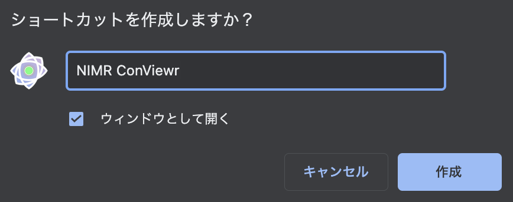
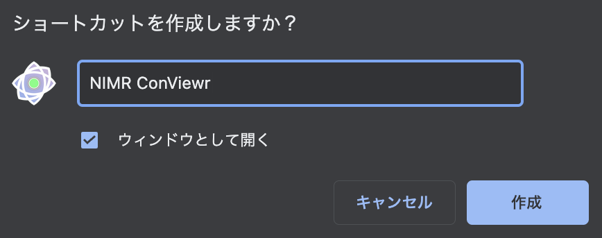

ダウンロード方法
※これはChromeにしか対応しておりません。
Safari,Firefox,Edge,Operaなどは対象外です。
青の枠に囲われているUIをクリック
[ その他のツール＞ショートカット作成... ]
でショートカット作成をクリック
ウインドウとして開く にチェックして作成
戻る
※これはChromeにしか対応しておりません。
Safari,Firefox,Edge,Operaなどは対象外です。
青の枠に囲われているUIをクリック
[ その他のツール＞ショートカット作成... ]
でショートカット作成をクリック
ウインドウとして開く にチェックして作成
